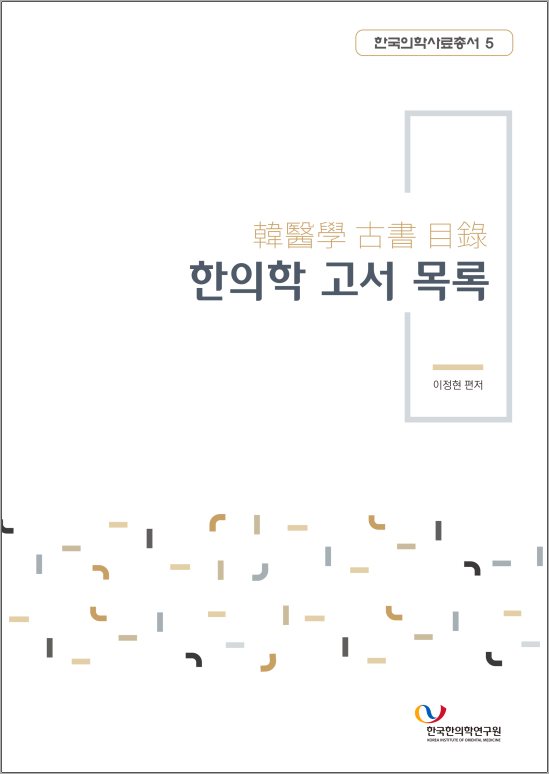

<div class="pt-5" style="" >
	<div class="container">
		<div class="row">
			<div class="col-md-4 mr-auto order-2 order-md-1">  </div>
			<div class="px-md-5 p-3 d-flex flex-column align-items-start justify-content-center col-md-7 order-1 order-md-2">
				<p class="mb-3 lead">한의학 고서 목록은<br>한의학과 관련된 서적과 소장처를 모은 종합목록입니다.&nbsp;<br><br>각 기관의 소장 목록을 비롯하여,<br>책판목록과 같은 간행 목록,<br>《조선의서지朝鮮醫書誌》와 같은 서지 연구서 목록,<br>《사고전서四庫全書》와 같은 공구서 및 기타 목록을<br>가능한 많이 모으려고 했습니다.</p><a class="btn text-white" style="background:#ff4500" href="{{site.baseurl}}/search">검색</a>
			</div>
		</div>
	</div>
</div>
